Introduzione
In questo esercizio sviluppiamo un gioco per due giocatori. Lo scopo e’ di far gareggiare un pappagallo ed un leone nel deserto. Ogni giocatore deve premere un tasto il piu’ velocmente possibile per far correre il proprio animale. Il primo che raggiunge il bordo dello schermo vince.

Passo 1: Crea la scena ed aggiungi gli sprite
Lista delle Attivita’
- Seleziona lo stage e aggiungi uno sfondo chiamato desert nella categoria Natura
- Aggiungi uno sprite dalla libreria selezionando Lioness dalla categoria Animali
- Aggiungi uno sprite dalla libreria selezionando Parrot dalla categoria Animali. Rimpiccioliscilo in modo che abbia dimensioni simile al leone.
Passo 2: Fai muovere il leone ed il pappagallo
Vogliamo che gli sprite si muovano alla pressione di un tatso.
Lista delle Attivita’
Seleziona lo sprite leone e aggiungi un blocco
fai (4) passiquando il giocatore preme il tasto ‘L’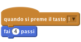
Adesso seleziona lo sprite pappagallo e aggiungi un blocco
fai (4) passiquando il giocatore preme il tasto ‘A’.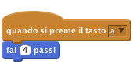
Verifica il tuo progetto
Fai click sulla bandierina verde.
- Quando premi i tasti ‘A’ o ‘L’ vedi il pappagallo ed il leone avanzare sullo schermo?
Salva il tuo progetto
Passo 3: Inizia la corsa
Ci serve un meccanismo per iniziare il gioco e sapere chi ha vinto. Prima di tutto creiamo un nuovo pulsante.
Lista delle Attivita’
- Aggiungi un nuovo sprite dalla libreria selezionando button3 dalla categoria Cose
- Modifica il costume dello sprite button3 ed aggiungi il testo ‘start’ e fai click su OK. Muovi lo sprite al centro dello stage.
Adesso aggiungi uno script per
button3che visualizza lo sprite all’inizio del gioco:
Adesso vogliamo che il pulsante, dopo che gli hai cliccato su, inizii il conto alla rovescia da 3 e poi dica
Via!ed infine che si nasconda: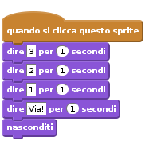
Verifica il tuo progetto
Fai click sulla bandierina verde.
- Quando premi il pulsante
startviene visualizzato il conto alla rovescia prima di scomparire?
Salva il tuo progetto
Vogliamo che i corridori si possano muovere solo dope che la corsa sia effettivamente iniziata. Vogliamo anche sapere quando la corsa e’ finita. Abbiamo bisogno di una variabile per tale informazione
- Aggiungi una variabile per tutti gli sprite chiamata
corsa. Deseleziona la variabile in modo che non appaia sullo stage. Adesso assegna il valore 0 alla variabile corsa quando il gioco inizia. Cambia il tuo script in questo modo:
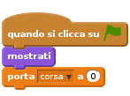
- Imposta a 1 la variabile corsa quando il gioco inizia (dopo il conto alla rovescia iniziale).
- Dobbiamo fermare il leone ed il pappagallo nella loro corsa se corsa vale 0
Fai click sullo sprite del pappagallo. Aggiungi un blocco di controllo
se...alloraallo sprite in modo che possa muoversi se corsa = 1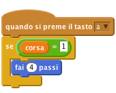
Fai lo stesos per lo sprite del leone
Verifica il tuo progetto
Fai click sulla bandierina verde.
- Il pappagallo o il leone si muovono solo dopo che il conto alla rovescia e’ finito?
Vogliamo sapere chi ha vinto la corsa reinizializzare il contatore cosi’ si puo’ gareggiare dinuovo.
Salva il tuo progetto
Passo 4: Finire la corsa
Lista delle Attivita’
Aggiungi un blocco allo script del pappagallo che imposta la variabile corsa a 0 quando tocca il bordo dello schermo.
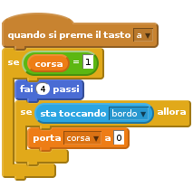
- Adesso vogliamo che il pappagallo ci faccia sapere se ha vinto la corsa. Registra un suono per il pappagallo che verra’ emesso in caso di vittoria. Fai click su
Suonie qui registra il suono. Aggiungi un blocco
produci suonoper far emettere il suono appena registrato in caso di vittoria del pappagallo: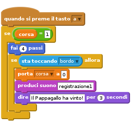
Adesso ripeti questi passi per il leone.
Verifica il tuo progetto
Fai click sulla bandierina verde.
- Quando premi il pulsante
Startriesci a gareggiare premendo i tasti ‘A’ e ‘L’? - In caso di vittoria lo sprite emette il proprio suono e ci dice che ha vinto?
Salva il tuo progetto
Passo 5: Reinizializzare il gioco
Quando la gara e’ finita dobbiamo dire all’altro sprite che abbiamo vinto e reinizializzare il gioco per un’altra partita.
Vogiamo che lo sprite vincitore invii un messaggio.
Lista delle Attivita’
Fai click sullo sprite del pappagallo
Aggiungi un bloccoinvia a tutticon un messaggio finito come ultima operazione.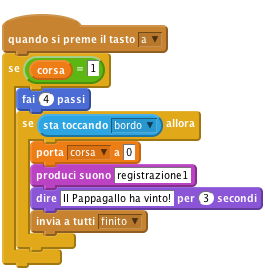
Adesso dobbiamo aggiungere un nuovo script che ascolta il messaggio
finitoe muove il pappagallo dinuovo sulla linea di partenza. Cosa succede se cambi il valore di x?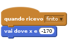
- Aggiungi lo stesso script per il leone. Prova diversi valori di x finche’ non riesci ad allineare il leone ed il pappagallo sulla linea di partenza.
Vogliamo anche posizionare il pappagallo ed il leone sulla linea di partenza quando il gioco inizia. Aggiungi un altro script che muove lo sprite sulla linea di partenza quando fai click sulla bandierina.
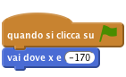
Verifica il tuo progetto
Fai click sulla bandierina verde.
- Riesci a gareggiare con un tuo amico premendo ‘A’ per muovere il pappagallo e ‘L’ per il leone?
Salva il tuo progetto
Sfida 1: Aggiungi un turbo
- Prova ad aggiungere un turbo che puoi usare una sola volta per corsa, che muove lo sprite di 30 passi in una sola volta
- Aggiungi un nuovo costume con le fiamme dietro lo sprite che visualizzi solo quando il turbo e’ attivo.
Registra un nuovo suono che lo sprite emettera’ quando il turbo e’ attivo.
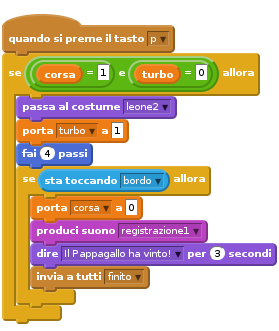
Salva il tuo progetto
Sfida 2: Usa dei blocci personalizzati per semplificare lo script
La logica per verificare se la corsa e’ finita e’ usata in due punti distinti dello script: quando lo sprite si muove normalmente e quando si muove con il turbo. Possiamo rendere lo script piu’ leggibile usando un blocco personalizzato che verra’ usato in punti diversi dello script.
- Seleziona lo script del pappagallo
- Seleziona
Altri Blocchidalla palette Script e poi fai click suCrea un Blocco. - Chiama il nuovo blocco finito
- Adesso dovresti vedere un blocco
definisci finito. Muovilo in un area libera dello script. Stacca il blocco
sesta toccandoallorae trascinalo ed aggancialo nel nuovo bloccodefinisci finito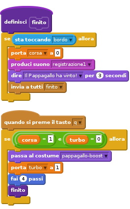
Puoi trascinare il blocco finito dalla palette ed utilizzarlo come qualsiasi altro blocco di Scratch?
Rimuovi l’altro blocco se sta toccando allora e sostituiscilo con il nuovo blocco finito
Adesso il tuo script e’ piu’ leggibile? Puoi creare un blocco personalizzato anche per il leone?
Salva il tuo progetto
Ben fatto!!! Hai finito con questo esercizio. Adesso divertiti con il tuo nuovo gioco!!!
Ehi, non dimenticare che puoi condividere il tuo gioco con tutti i tuoi amici e familiari. Basta che fai selezioni il menu File e poi Share to website!!